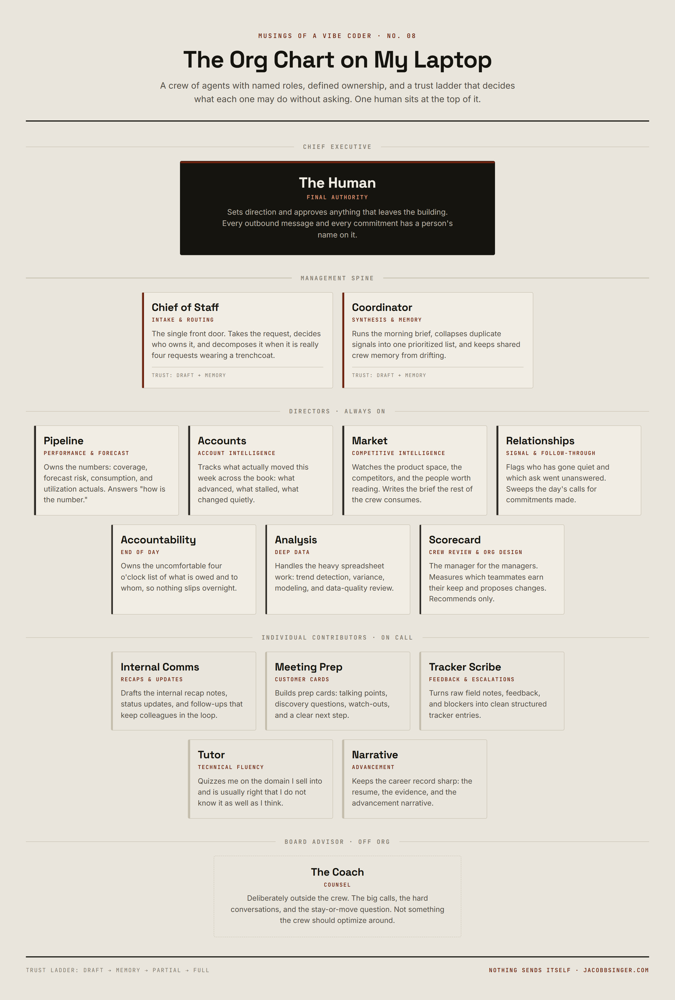
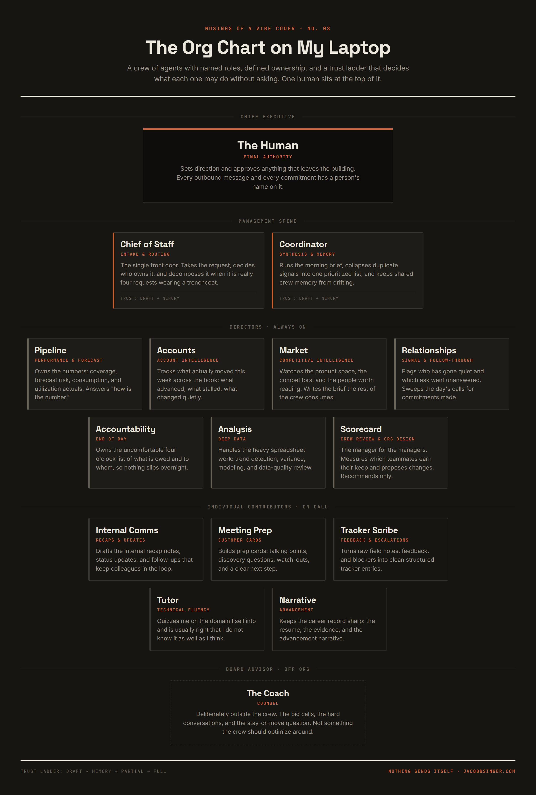

I opened my laptop at seven on a Tuesday morning and the work had already started without me.
There was a brief waiting. Not because I asked for one that morning, but because I had asked for one months earlier and something had gone ahead and kept doing it. The brief had my calendar, three things that had gone quiet, one thing I had promised someone on a call the previous week and quietly forgotten, and a note that two of my meetings were going to collide with a customer prep I had not started.
I did not prompt anything. I just read it, and started my day already knowing what it looked like.
Somewhere in the months before that morning, the tool had stopped being a tool and started being a coworker, and I never noticed it happen.
That is the shift I keep trying to explain to people, and it is not really about the models.
The workplace change nobody put on a slide is that the unit of AI work stopped being the answer and started being the assignment.
For two years the enterprise conversation has been about capability. Can it summarize. Can it reason. Can it code. Can it do the thing a competent person would do if you gave them the same inputs and a quiet hour. The answer is broadly yes now, for a large class of work, and once that stopped being interesting a stranger question showed up in its place.
If you have something that can do the work of a competent person, why would you only give it one job?
The assistant framing ran out
I wrote a piece a while back about giving agents somewhere to work, and another about the fact that a workforce of agents needs the shape of an HR function to survive contact with a real organization. Both of those were written looking outward, at enterprises, at customers, at the operating model gap I keep running into in the field.
This one is written looking at my own desk, because I went and built the thing I was describing and it turns out the lessons are not theoretical.
The assistant framing has a ceiling and you hit it faster than you expect. A single general assistant is genuinely useful for about the first month. Then you notice you are spending real energy re-explaining context. You explain your accounts again. You explain your voice again. You explain, for the fourth time, that when you say pipeline you mean something specific and not the generic thing the model would like it to mean.
The problem is not intelligence. The problem is that one general worker with no memory of its own role is functionally a very smart temp who starts fresh every morning.
The fix, as it turns out, is the same fix organizations landed on a century ago.
Specialize. Name the specialties. Write down what each one owns. Give them a place in a structure so you know who to go to without thinking about it.
The org chart, top down
I have a crew. It has an org chart. I am aware of how that sounds and I am going to keep saying it, because the structure is the part that made it work.
At the top is me. Not as a joke about being the CEO of my own laptop, but because every meaningful decision, every outbound message, every commitment to another human being has a person’s name on it. That is not a limitation I am waiting to remove. It is the design.
Below that sits a small management layer. There is a chief of staff, which is the single front door. Anything I do not want to think about routing goes there first, and it does what a good chief of staff does: takes the request, figures out who owns it, decomposes it if it is really four requests wearing a trenchcoat, and either hands it off or tells me who to hand it to. Next to that sits a coordinator whose entire job is stitching. Morning brief, collision checks, and the unglamorous work of keeping the crew’s shared memory from drifting into five contradictory versions of the same fact.
Those two exist for one reason: notification sprawl. The first version of this crew fired eight separate updates at me before nine in the morning and I ignored all of them, which is the most predictable failure in the world. Now there is a layer whose job is to collapse eight signals into one prioritized list.
A crew without a synthesis layer is not a team. It is a group chat you cannot mute.
Under the management layer are the directors. These are the always-on domain owners, and they map almost exactly to the parts of my job I would delegate first if I had headcount.
Pipeline and performance. Account intelligence, which is the “what actually moved this week” function. Market intelligence, watching the product space and the competitors and the people worth reading. Relationship management, which flags the customer or the colleague or the internal partner who has gone quiet and the ask I never answered. End-of-day accountability, which is a genuinely uncomfortable four o’clock list of what I owe and to whom. A deep data analyst for the heavy spreadsheet work. And a crew scorecard function whose job is to evaluate the rest of them and tell me who is not earning their keep.
That last one deserves a sentence. I built a manager for the managers before I built half the specialists, and it has been the single highest-value piece of the structure. It is the thing that told me one of my early agents had been running for six weeks producing output I never once read.
Below the directors are the individual contributors, and these are on-call rather than always-on. Internal communications drafting, the recap notes and status updates and follow-ups that keep colleagues in the loop. Customer meeting prep. Feedback and tracker entries. Resume and advancement narrative. A tutor for the technical domain I sell into, which quizzes me on the things I think I know and is usually right that I do not.
And off to the side, outside the org entirely, a coach. Career, 1:1 prep, the stay-or-move conversation. Deliberately not reporting into the crew, because the questions I ask it are not questions the crew should be optimizing around.
Trust is a different axis than seniority
This is the design decision I did not expect to need, and the one I would tell anyone building something similar to make first.
Seniority in the org chart tells you scope. Trust tells you what a teammate is allowed to do without asking. They are not the same axis and collapsing them into one causes real problems.
I run four trust levels. Draft, which means it produces and I review. Memory, which adds the ability to write to shared crew context. Partial, which means it can queue or stage something into a real system where I still have to press the last button. Full, which means it acts.
Almost everything sits at draft. My most senior teammates, the chief of staff and the coordinator, are draft and memory only. They synthesize the entire picture of my work and they cannot send a single message to another human being. Meanwhile the teammate that stages entries into an internal tracker sits a notch higher on trust, because the blast radius of a queued entry I still have to approve is small and the workflow genuinely benefits from staging.
A teammate can be senior and still be forbidden from touching the outside world. In fact the senior ones should be.
The rule I settled on is simple. The more context a teammate holds, the more carefully you gate what it can do with that context. The chief of staff knows everything about my week. That is exactly why it gets the tightest leash.
What a Tuesday actually looks like
The shape, not the specifics.
Eight in the morning, the coordinator has already produced the brief. Calendar, conflicts, what came in overnight that matters, and a short list of what is at risk today. I read it in ninety seconds.
Mid-morning, something lands that is genuinely three things. A customer asked a technical question, wants a follow-up note, and the exchange revealed a product gap worth logging. I hand the whole mess to the chief of staff, which splits it: the technical answer to the tutor, the follow-up note to the communications writer, the gap to the tracker scribe. Three drafts come back. I edit two of them, delete one and write it myself, and send everything with my own hands.
Early afternoon, prep for tomorrow’s customer meeting. The prep specialist builds the card, and it pulls from the market intelligence director for what has moved in the space and the account intelligence director for what moved on the account. I did not orchestrate that. The prep skill knows to ask.
Three thirty, the relationship manager sweeps the day’s calls, pulls what I committed to on each one, and hands the list forward.
Four o’clock, the end-of-day accountability function fires, holding that list plus everything else outstanding, and tells me what I should not log off without doing. It is the least fun thing on my calendar and the most useful.
Friday afternoon, the scorecard runs and tells me which teammates produced output I actually used this week.
None of this is a chatbot conversation. It is a set of standing responsibilities that happen to be executed by software.
The handoffs are the interesting part
If there is one thing I would point at as the real unlock, it is not any individual agent. It is the fact that they hand work to each other and I am not in the middle of it.
The market intelligence director runs a research sweep on a cadence and writes the brief to a known place. The meeting prep specialist reads that brief when it builds a card. The tutor reads it too, and uses it when it quizzes me on competitive positioning. The internal comms writer reads it when I need a team update that reflects where the market actually is. One research pass, three consumers, zero re-prompting.
The pipeline director extracts the numbers from the reporting system. The data analyst picks them up, compares them to the last extract, and produces the workbook. Two teammates, one scheduled job, and I read the output rather than assembling it.
The relationship manager captures commitments and pushes them into the accountability function’s queue. That handoff is the reason things stopped falling through, and it is not clever technology. It is just two functions agreeing on where the list lives.
The pattern underneath all of these is boring and important. Handoffs work when the interface is a known artifact in a known place, not a conversation. Agent to agent chat is fragile. Agent writes file, agent reads file, is not.
The standing meetings nobody attends
Roughly twenty of these things run on a schedule now, and the mental model that finally made them make sense is that they are standing meetings.
A morning brief on weekdays. An end-of-day wrap. A weekly scorecard on Friday afternoon. A biweekly research sweep. A biweekly coverage analysis on the first and fifteenth. A nightly reflection pass that compresses the day into something the crew can remember next week.
Same idea as any recurring meeting in a functioning organization: a fixed cadence, a known owner, a defined output, and permission to be brief when there is nothing to report. The last part matters more than it sounds. My account notes refresh deliberately does nothing to accounts with no fresh signal, and an unchanged date stamp is itself the signal. An agent that reports nothing when there is nothing is more trustworthy than one that always finds something to say.
The honest limits
Worth being clear about what this is not.
This is not autonomy. Almost nothing here acts on the world. The crew drafts, analyzes, routes, remembers, and reminds. I send. If you removed me the entire structure would produce a great deal of well-organized output that never reached another human being, which is the correct failure mode.
This is also not free. There is real maintenance. Skills drift. Instructions that were sharp in June get vague by August. Two teammates develop overlapping opinions about the same thing. Something breaks silently and produces confidently wrong output for a week before anyone checks. The reason I have a scorecard function is that I learned this the expensive way.
And it is not a template. The specific roles I built are shaped exactly like my job. Someone in a different function would build a different crew, and most of the value is in the act of decomposing your own work honestly enough to name the roles.
That part is not an AI exercise. It is a management exercise.
The closing read
The thing that surprised me was not how capable the individual agents are. It was how much of the value came from structure that has nothing to do with intelligence at all.
Naming who owns what. Deciding what each one is allowed to do. Putting a synthesis layer between the work and my attention. Agreeing on where the handoff lives. Reviewing, on a cadence, whether any of it is still earning its place.
Those are all things organizations figured out a long time ago, for people. It turns out they transfer.
The models got good enough to do the work.
Managing the work is still the job.


Views expressed are explicitly that of my own.